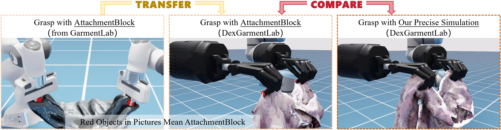
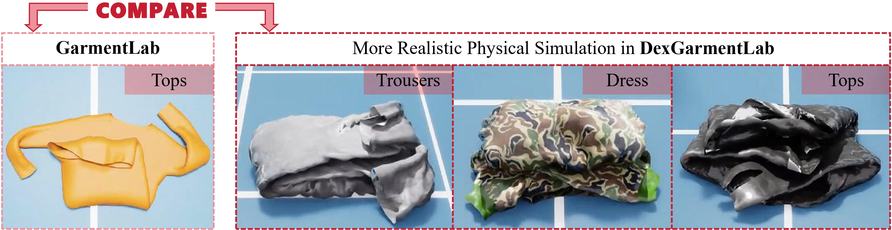

Under Review
1Peking University,
2University of California, Berkeley
* indicates equal contributions
Garment manipulation is a critical challenge due to the diversity in garment categories, geometries, and deformations. Despite this, humans can effortlessly handle garments, thanks to the dexterity of our hands. However, existing research in the field has struggled to replicate this level of dexterity, primarily hindered by the lack of realistic simulations of dexterous garment manipulation. Therefore, we propose DexGarmentLab, the first environment specifically designed for dexterous (especially bimanual) garment manipulation, which features large-scale high-quality 3D assets for 15 task scenarios, and refines simulation techniques tailored for garment modeling to reduce the sim-to-real gap. Previous data collection typically relies on teleoperation or training expert reinforcement learning (RL) policies, which are labor-intensive and inefficient. In this paper, we leverage garment structural correspondence to automatically generate a dataset with diverse trajectories using only a single expert demonstration, significantly reducing manual intervention. However, even extensive demonstrations cannot cover the infinite states of garments, which necessitates the exploration of new algorithms. To improve generalization across diverse garment shapes and deformations, we propose a Hierarchical gArment-manipuLation pOlicy (HALO). It first identifies transferable affordance points to accurately locate the manipulation area, then generates generalizable trajectories to complete the task. Through extensive experiments and detailed analysis of our method and baseline, we demonstrate that HALO consistently outperforms existing methods, successfully generalizing to previously unseen instances even with significant variations in shape and deformation where others fail.

DexGarmentLab includes three major components:
- Environment: We propose Dexterous Garment Manipulation Environment with 15 different task scenes (especially for bimanual coordination) based on 2500+ garments.
- Automated Data Collection: Because of the same structure of category-level garment, category-level generalization is accessible, which empowers our proposed Automated Data Collection Pipeline to handle different position, deformation and shapes of garment with task config (including grasp position and task sequence) and grasp hand pose provided by single expert demonstration.
- Generalizable Policy: With diverse collected demonstration data, we introduce Hierarchical gArment manipuLation pOlicy (HALO) , combining affordance points and trajectories to generalize across different attributes in different tasks.
We introduce adhesion (between particle and rigid), friction (between particle and rigid) and particle-scale (between particles) parameters to enhance realism for physical garment simulation.
Benefiting from friction and adhesion, dexhands can grasp and lift garments based on physical force without attach blocks.
Particle-adhesion (or -friction)-scale stabilizes the particle system, preventing excessive self-collisions between particles which cause garments to become disorganized.

We introduce 15 garment manipulation tasks across 8 categories, encompassing both garment-self-interaction (e.g., Fling, Fold) and garment-environment-interaction (e.g., Hang, Wear, Store) scenarios. In garment-self-interaction tasks, key variables include garment position, orientation, and shape. In garment-environment-interaction tasks, environment-interaction assets positions (e.g., hangers, pothooks, humans, etc.) are also considered.
Automated Data Collection Pipeline:
(1) For a given task, we begin with a single expert demonstration to extract key information: demo hand grasp poses, demo task sequences, and demo grasp points on the garment.
(2) Leveraging the Garment Affordance Model (GAM), we use affordance to identify target grasp points on novel garments with diverse deformations corresponding to demo grasp points.
(3) Finally, the pipeline executes the task sequence based on inferred points and hand grasp poses, thereby enabling automated, efficient and scalable data collection.
Attention: The trajectories are adaptive to garment strctures and scene configurations,
which means for different garments and scenes, the trajectories (including lifting height, push position, etc.) are different.
Here shows task initialization and randomization figure of different tasks and three whole-procedure videos each task with different configurations.
We adopt hierarchical structure to implement Generalizable Policy (HALO), achieving better generalization in garment manipulation than previous imitation learning algorithms,
which consists of two stages:
Stage Ⅰ: We use GAM to generate generalizable affordance points, which will be used for robots to locate and move to target area.
Stage Ⅱ: we introduce Structure-Aware Diffusion Policy (SADP),
which extracts features from garment point cloud (with left and right point affordances as binding features),
interaction-object point cloud, environment point cloud and robot joint states as condition to generate joint actions
(including 24 DOF for each hand and 6 DOF for each arm, totally 60 DOF).
Please refer to paper for detailed analysis. Here we show the real-world setup and execution of HALO.
Fold Tops Real-World Videos
Hang Tops Real-World Videos
Wear Hat Real-World Videos
Wear Scarf Real-World Videos
We select Fold_Tops (Garment-Self-Interaction), Hang_Tops, Wear_Scarf, Wear_Hat (Garment-Environment-Interaction) as typical tasks for illustration. The test samples have different shapes, length, deformations while position of garments and interaction objects are variable. Despite this, GAM of HALO ensures accurate manipulation area location for grasp while SADP of HALO ensures adaptive trajectories base on garment and interaction object.
@misc{wang2025dexgarmentlab, title={DexGarmentLab: Dexterous Garment Manipulation Environment with Generalizable Policy}, author={Yuran Wang and Ruihai Wu and Yue Chen and Jiarui Wang and Jiaqi Liang and Ziyu Zhu and Haoran Geng and Jitendra Malik and Pieter Abbeel and Hao Dong}, year={2025}, eprint={2505.11032}, archivePrefix={arXiv}, primaryClass={cs.RO}, url={https://arxiv.org/abs/2505.11032}, }